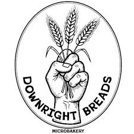

Against the Grain Community

Downright Breads is a New Haven–area micro-bakery producing artisanal breads and baked goods rooted in quality craftsmanship and community connection. Offering rotating seasonal varieties — from classic sourdough to challah and thick-cut English muffins — their products are available through a pre-order system with pickup at neighborhood farmers markets and community bread lockers across New Haven, Westville, and West Haven. By grounding their distribution in accessible, neighborhood-level hubs, Downright Breads strengthens the local food economy and makes handcrafted, wholesome bread available to everyday residents.
En españolDownright Breads es una micro-panadería del área de New Haven que produce panes artesanales y productos horneados con un compromiso con la calidad y la conexión comunitaria. Ofrecen variedades de temporada en rotación — desde masa madre clásica hasta jalá y English muffins gruesos — disponibles a través de un sistema de pedidos anticipados con recogida en mercados de agricultores y armarios comunitarios de pan en New Haven, Westville y West Haven. Al centrar su distribución en puntos de acceso locales, Downright Breads fortalece la economía alimentaria local y acerca el pan artesanal y nutritivo a los residentes del vecindario.
Visit Website